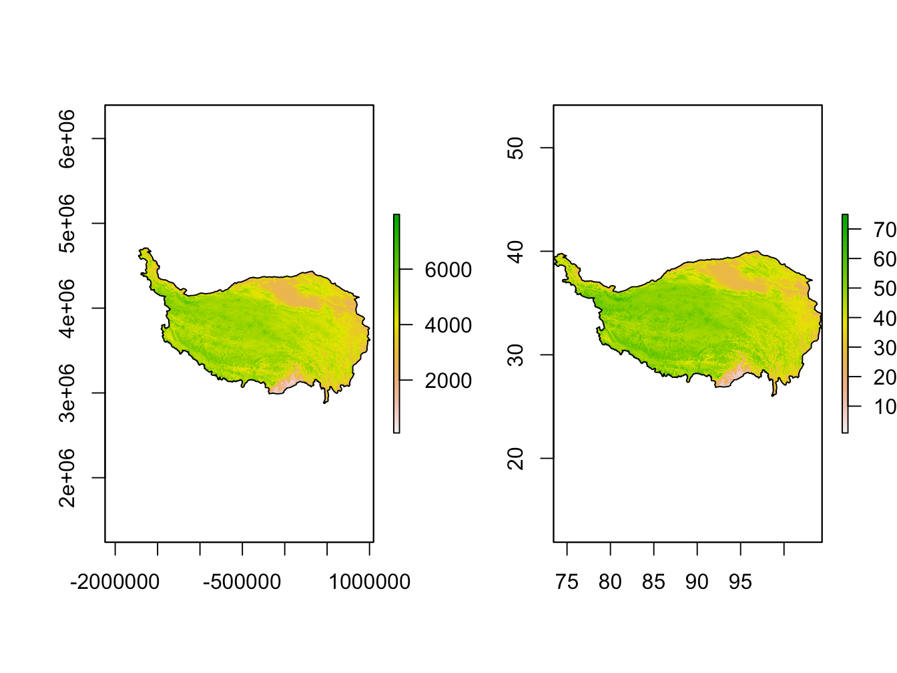

5 ================================================================
- 重采样 # ================================================================
t01 = raster()
extent(t01) = extent(r.tp)
t05=t01
res(t01) = 0.1 # 分辨率0.1度
res(t05) = 0.5 # 分辨率0.5度
r1 = resample(r.tp, t01, method = 'bilinear') #双线性插值，0.1度
r2 = resample(r.tp, t05, method = 'ngb') #最临近法，0.5度
r3 = resample(r.tp, t01, method = 'ngb') #最临近法，0.5度
par(mfrow=c(2,2))
plot(r.tp, main=paste0('Original, res=', mean(res(r.tp))))
plot(r1, main='res=0.1, bilinear')
plot(r2, main='res=0.5, ngb')
plot(r3, main='res=0.1, ngb')
(#fig:ch4.resample)绘图：栅格数据重采样
- 重投影
rp = projectRaster(r.tp, crs=crs(s3)) #栅格数据重投影
par(mfrow=c(1,2))
plot(rp); plot(add=T, s3)
plot(r.tp); plot(add=T, sp3)

(#fig:ch4.reproject)绘图：栅格数据重投影
- 空间随机采样和绘图
n=50
xyz=raster::sampleRandom(r.tp, size=n, xy=TRUE)
graphics.off()
plot(r.tp)
points(xyz[, 1:2],col=2)
# 更复杂的作图效果
xrand = rnorm(n)
pch = rep(25, n) # 符号
pch[xrand > 0] = 17
col=rep(4, n) # 符号颜色
col[xrand > 0] = 2
cex = (abs(xrand)^.6) # 符号大小
zlim=cellStats(r.tp, range)
brks = round(seq(zlim[1], zlim[2], length.out = n), -2)
colbar = colorspace::diverge_hcl(n=n)
# graphics.off()
plot(sp3, axes=TRUE)
# plot(r, add=T, legend=FALSE, alpha=0.5)
plot(r.tp, add=TRUE, col=colbar, brks=brks, legend=FALSE)
points(xyz[, 1:2], col=col, pch=pch, cex=cex)
plot(add=T, sp3)
grid()
plot(r.tp, legend.only=TRUE, breaks=brks, col=colbar,
smallplot=c(c(0.2, 0.8), c(0.0, 0.03)+0.25 ),
# legend.width=5, legend.shrink=.7, cex=5,
horizontal=T,
axis.args=list(col.axis='blue', lwd = 0,
font.axis=4, cex.axis=1.5,tck = 0, line=-.85,
at=brks,
cex.axis=.8)
# ,legend.args=list(side=4, text='mm',col=4,font=2, cex=1.5)
)- 空间插值
# install.packages('fields') #需要fields 支持
library(fields)
rx = r1
tps <- fields::Tps(xyz[, 1:2], xyz[, 3])
p <- raster(rx)
p <- interpolate(p, tps)
p <- mask(p, rx)
graphics.off()
plot(p); points(xyz[, 1:2]); plot(add=T, sp3)
contour(p, add=T, col='gray30')
## change the fun from predict to fields::predictSE to get the TPS standard error
se <- interpolate(p, tps, fun=predictSE)
se <- mask(se, rx)
plot(se); points(xyz[, 1:2]); plot(add=T, sp3)
contour(se, add=T, col='gray30')- 地形分析
x = raster::slopeAspect(r.tp) # 计算坡度和坡向
par(mfrow=c(1,2))
plot(x[[1]], main=names(x)[1])
plot(x[[2]], main=names(x)[2])
(#fig:ch4.terrain)绘图：地形分析
- 矢量栅格化
r.sp1=rasterize(x=sp1,y=t01)
plot(r.sp1)
(#fig:ch4.rasterize)绘图：矢量数据栅格化
5.1 可视化
library(raster)
library(rgdal)
r = raster('Excercise/Data_spatial/DEM.tif')
sp1 = readOGR(verbose = FALSE, 'Excercise/Data_spatial/Province.shp')
sp2 = readOGR(verbose = FALSE, 'Excercise/Data_spatial/City.shp')
sp3 = readOGR(verbose = FALSE, 'Excercise/Data_spatial/TibetPlateau.shp')
plot(r)
plot(add=TRUE, sp1, border='gray60')
plot(add=TRUE, sp2, col='gold', pch=19, cex=2)
plot(add=TRUE, sp3, col = rgb(0.1, 0, 0, alpha=0.1))
Figure 8: 绘图：地图
- 保存绘图
# png(filename='Map.png') #最简单输入PNG格式
# pnf(filename='Map.pdf') #输出PDF格式
png(filename='Map.png', width=279, height=216, res=200, unit='mm') #精细数据输出
plot(r)
plot(add=TRUE, sp1, border='gray60')
plot(add=TRUE, sp2, col='gold', pch=19, cex=2)
plot(add=TRUE, sp3, col = rgb(0.1, 0, 0, alpha=0.1))
dev.off()## quartz_off_screen
## 2- 开放数据背景
# install.packages('rosm') # 需要安装ROSM
# install.packages('prettymapr') # 需要安装prettymapr
library(rosm)
library(prettymapr)
ns <- makebbox(37, 104, 33, 103)
osm.plot(ns)Figure 9: 绘图：OSM地图
loc1 = geocode('lanzhou')
loc2 = geocode('maqu')
prettymap({osm.plot(ns)
osm.points(loc1$lon, loc1$lat, pch=18, cex=1.5, col=2)
osm.points(loc2$lon, loc2$lat, pch=20, cex=1.5, col=3) }, scale.style="ticks", scale.tick.cex=0)Figure 10: 绘图：OSM地图
5.2 三维可视化
三维可视化需要使用OpenGL,因此，需要额外安装rgl包。